Logo
The logo for our refugee app Borderless combines two of our original designs: one depicts two people inside a globe, and the other shows the globe under the roof of a house.
The first design signifies the idea of a global community that transcends national borders and brings people from all walks of life together in a shared space.
This is particularly relevant for a refugee app, which aims to connect displaced individuals with resources and support networks across different countries and regions.
The second design, with the globe under the roof of a house, conveys a sense of safety, security, and belonging. It suggests that, despite their displacement,
refugees can find a new home and a sense of place in their new location. Overall, the logo for Borderless is a powerful symbol of hope and solidarity, we wanted to keep it simple
with minimal detail allowing people to intepret it in different ways. This logo represents the app's mission to break down barriers and build bridges between people from all corners of the world.
Variants
Acceptable logo variants: includes logo and wordmark separation, different logo styles, and colour variations.
Shaded
Simple
Black and White
Greyscale
Clearance
Acceptable clearance for the logos are listed below. No content may be within the clearance border in order to preserve logo integrity.
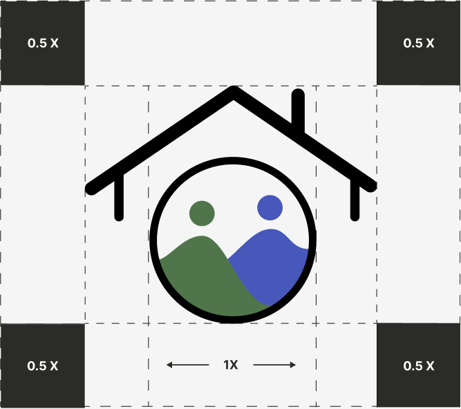
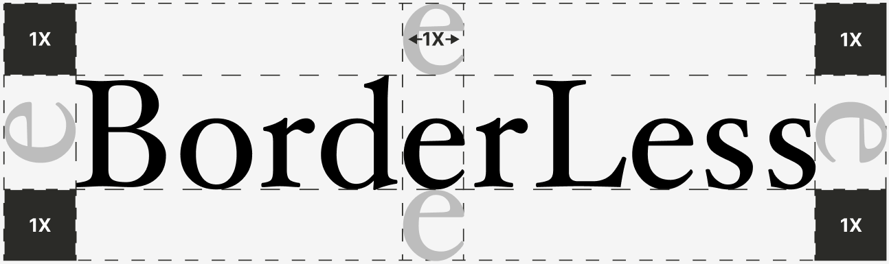
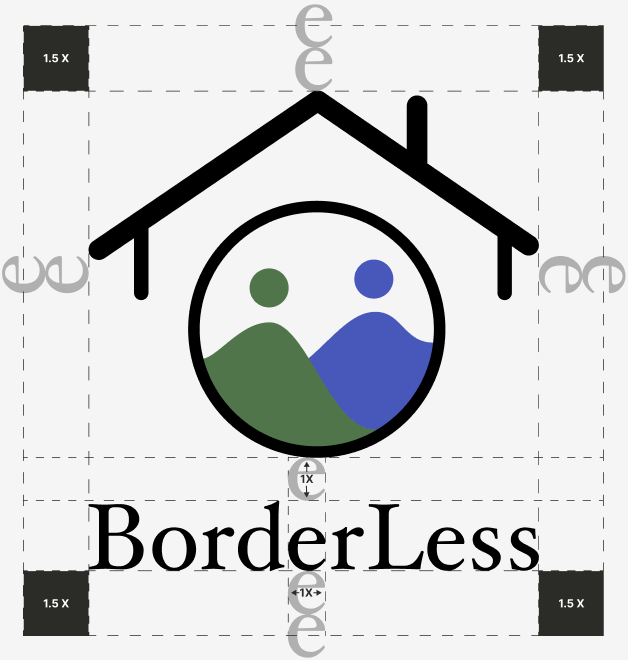
Sizing
Logo icon must a minimum 20px high. Wordmark must be minimum 50px wide. In the application, the logo is featured at 160px high on the landing screen.
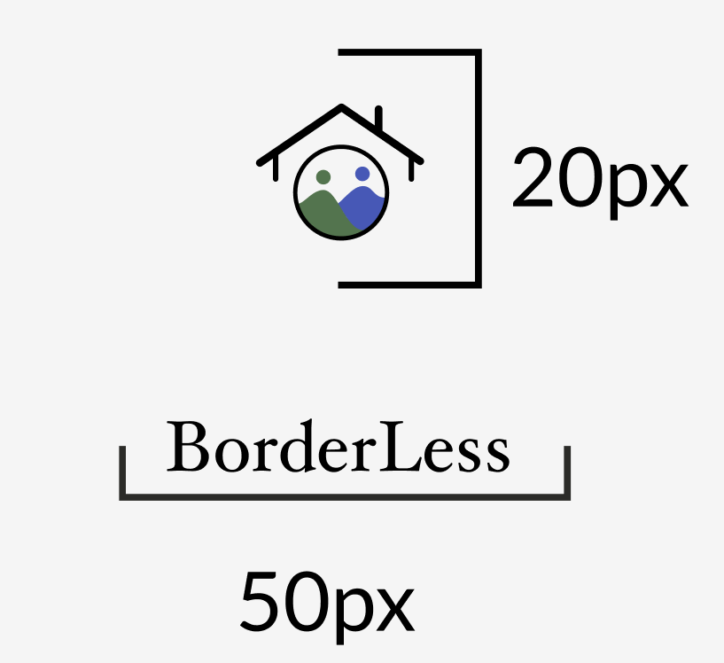
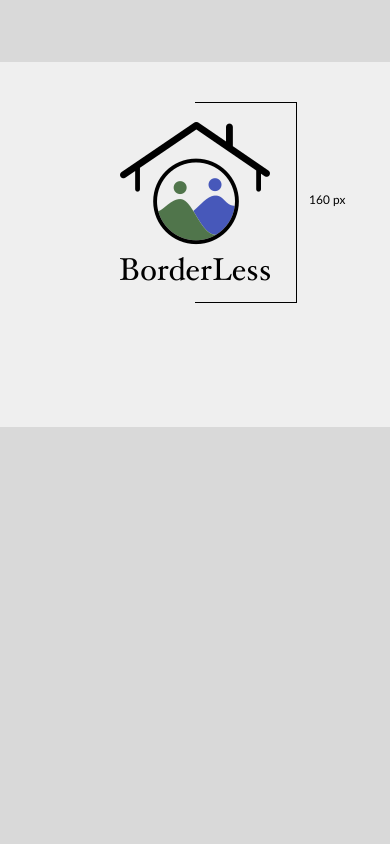
Do's
1. Do research and refine the Audience and design based on their wants
2. Do pay attention to legibility
3. Do use colour theory and color psychology
4. Do specify which colors are approved for use with the logo, and provide hex values.
Don'ts
1. Do not change the logo consistency
2. Do not make it too detailed
3. Do not rotate, tilt or shear the logo
4. Do not strech or distort the logo
5. Do not change the colors of the logo
6. Don't use your logo on busy backgrounds
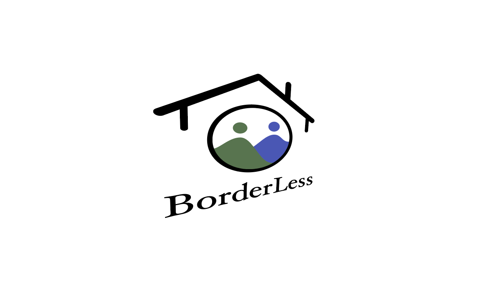
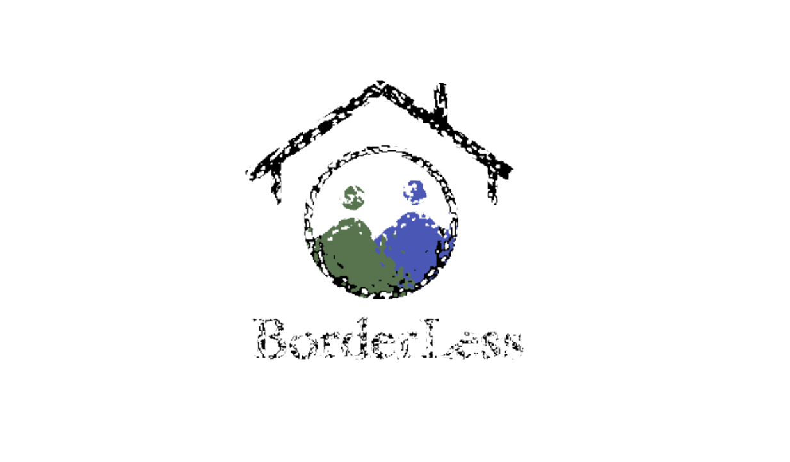
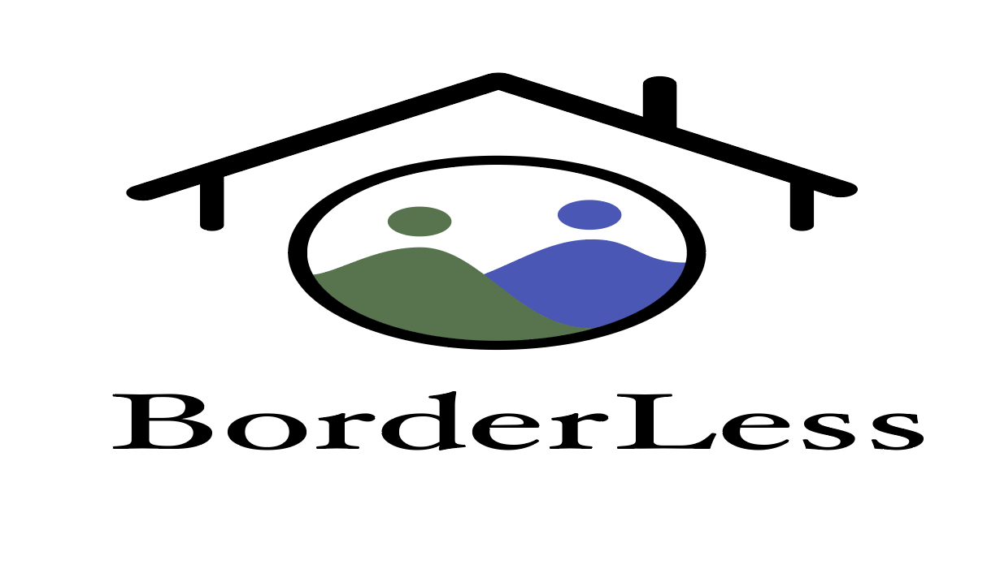
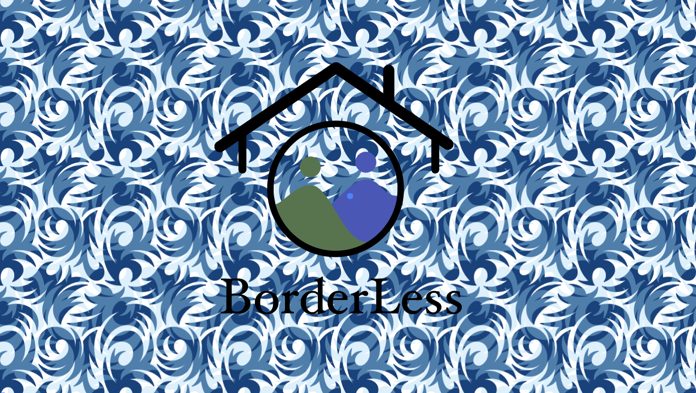
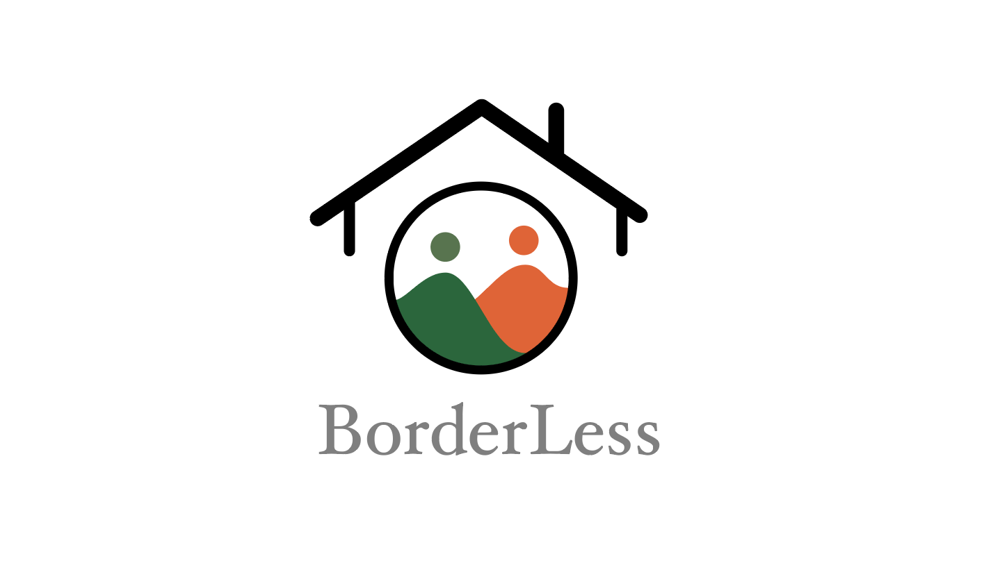
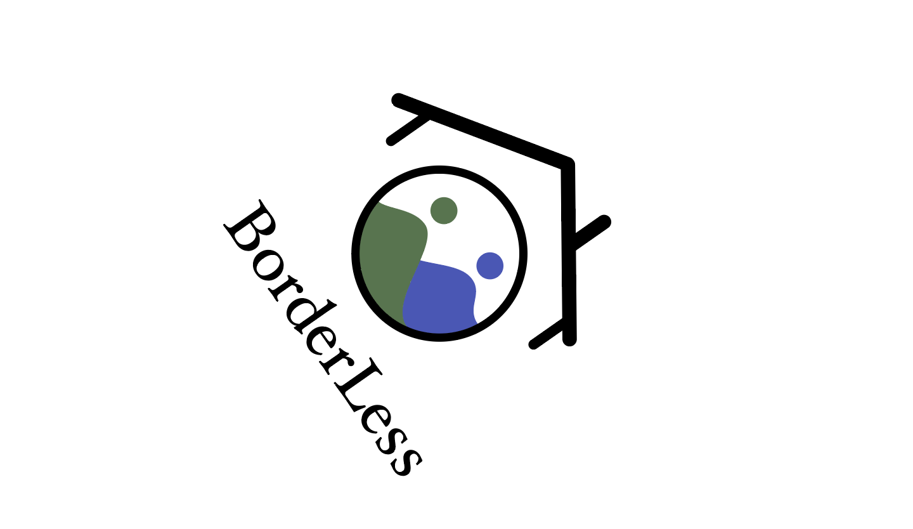